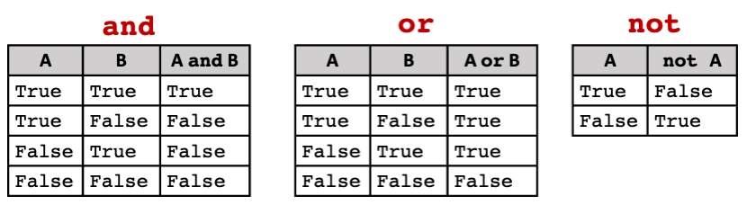

Comparison and logical operators#
We have already seen how we can slice or extract items from data structures. Several data manipulation operations can be done via membership, relational and logical operators which will help us query our data and return a final dataset back that satisfies our conditions. In this section we will be looking at how these operators can help us with data manipulation.
Comparison operators#
To compare values we need to use comparison operators, also known as, relational operators. Comparison operators contains the different comparison operators together with an example.
Operator |
Description |
Example |
|---|---|---|
|
less than |
|
|
greater than |
|
|
equal to |
|
|
greater or equal to |
|
|
less or equal to |
|
|
not equal to |
|
Solution to ( 6
#specify month you want to get the name of
month = 10
if month == 1:
print("January")
elif month == 2:
print("February")
elif month == 3:
print("March")
elif month == 4:
print("April")
elif month == 5:
print("May")
elif month == 6:
print("June")
elif month == 7:
print("July")
elif month == 8:
print("August")
elif month == 9:
print("September")
elif month == 10:
print("October")
elif month == 11:
print("November")
elif month == 12:
print("December")
else:
print("Month number not supported.")
October
Logical operators - and, or, not#
There are three logical operators in Python: and, or and not. When the logical operators are processing boolean
expressions they are also called boolean operators. Logical operators are used to combine comparison statements or expressions and
are written in the following way:
\(<comparison\) \(statement\) \(1>\) \(<logical\) \(operator>\) \(<comparison\) \(statement\) \(2>\)
For example, if we want to check if a mark falls within the range of 0 to 100, we can use the following code:
#set variable mark to 71
mark = 71
#check if mark falls between the range of 0 and 100
mark > 0 and mark <= 100
True
In the code above, mark > 0 is the comparison statement 1, and is the boolean operator and mark <= 100 is the comparison
statement 2. The tables below shows how comparison statements are processed by boolean operators.

Fig. 9 Evaluation of comparison statements with logical operators#
In the tables above, A and B are the bool results of comparison statements 1 and 2 respectively. The and operator is
the most stringent, in the sense that, it only evaluates to True if both comparison statements A and B are True. This would
be useful when you have a case where you need both conditions to be satisfied, as in the code example above.
For the or operator however, only one comparison statement needs to be True for or to evaluate to True.
exam_mark = 69
project_mark = 85
#check if student either got an exam mark that is more than 70 or project mark that is more than 70
exam_mark > 70 or project_mark > 70
True
In the example above, exam_mark > 70 will evaluate to False but project_mark > 70 will evaluate to True. Given
that one of the comparison statements have is True than or returns True.
The not operator only evaluates one comparison statement, and it simply returns the opposite result. Comparing values
is useful, but it gets more useful if we use comparison statements in control flow constructs.